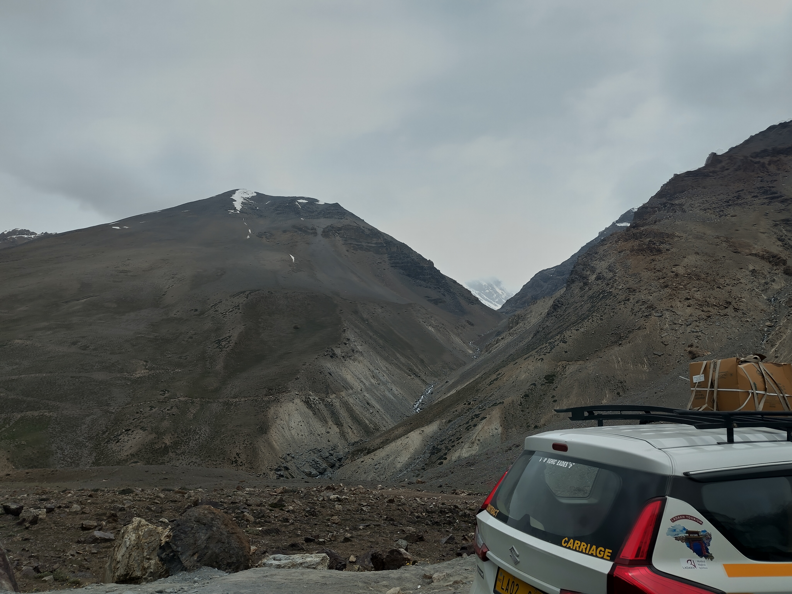

puit de lumiere
Sorti du puit d obscurité,
attiré par la lumiere de vie,
dont la beauté se decouvre a chaque pas,
ce monde qui semblait autre,
qu est ce que je me decouvre,
au plus profond de l’Etre,
où autrefois il n y avait que haine,
où la raison s acheve,
et l ame naît.
erruption
Grey collected
The sky cracked red
The sun errupted
Lava turns to gold
Finally, I like myself.
I like my smile
I like my voice
I love my mind
I appreciate my empathy
I adore my strength
I respect my patience
I accept my need to rest
I… am… At peace, with who I am.
remembrance
What are we if we dont remember
But frozen in time
Unable to change
As if we had died already
Forever young:
The scarlet moon brought me back to a time of passion.
Suddenly, there I was, 12 again; an age of sweet innocence,
A time of contemplating the cosmos through the lenses,
A place for dreams.
It was then that I realized that, much like the moon that night, the fire in me still burned. 🔥🌕
Greatness
Greatness is not in the way we dress.
It is not in our power.
True greatness comes from who we surround ourselves with.
It comes from how we help others.
It comes from the heart.
Quelle joie, de vivre! Dans la musique, dans la beauté de la vie, dans la profondeur des gens!
Je pense que finalement, je me suis trouvé.
We are like a canvas, but it is not empty. Indeed, it is already filled with all the events of our life.
What we can do is choose to apply glazing on it. We can also interpret certain areas differently.
Better yet, we can choose the colors and the area in which to paint our present. But it has to match with the rest.
Suddenly the beauty of everything occured to me. The drops of the rain, the power of the sky, the majesty of the buildings.
And I wondered how I missed it all these years.
Love is not need,
Love is strength.
Dont cage a bird for its song of freedom,
Or take a flower’s beauty as it will fane.
Peace.
My being and meaning are clear.
Now I am flexible like the reed,
Patient as the rock,
Present as the flow of water,
Content as a small child.
My mind and heart at peace, in the ever-now.
Frappé par la foudre,
Me voici sans forteresse,
Plus rien a découdre,
Pourtant point en détresse,
Comme un gamin,
Mais comme un homme,
Comme un libertin,
Mais comme…
Comme toi,
Avec foi.
Épanouie des sens,
Tu restes un mystère,
Pleine de vie
Pleine de sens,
Oiseau libre,
Chantant,
Dansant,
Forte comme un roc,
Et pourtant zen tu virevolte,
D’une profondeur sans fond,
Tu vis a ta façon.
La trace de ton baiser,
Me chante,
Et m’enchante,
Me brûle,
D’un feu de passion,
Qui ne laisse pas de place
A la raison.
Here I was,
Just as charged as before,
Yet never lighter,
And on the street,
I caught myself flying,
Whenever I stopped,
I caught myself dancing,
Energized,
Surprised,
To find in me,
The strength of two.
Some of us carry a flame,
A beacon of hope,
A light in their eyes,
A fire that spreads,
From the depth of the soul,
To the bottom of the hearts,
With this golden light,
Comes a profound calling,
A presque divine meaning,
It calls on us.
It calls on us to spread the fire,
And it calls on us to use its flame,
Not to let it die, but to let it show,
For that is how it spreads,
Through the power in our acts,
And the flashes of the profound others can see.
With perfect imperfections,
The writing flows,
Coming from the depth,
Waiting for expression,
With time it grows,
As a flower,
Gaining roots first,
Before emerging,
So full of colors,
And with a life of its own.
Une retrouvaille avant le depart,
Une balise vers l inconnu,
Un chemin par delà les remparts,
Avant de partir pour la longue nuit,
L avenir secret,
Le passé trop connu,
La journée de plus,
De passée à present,
La balade primale,
Dans les forets du passé,
Sous les perles des corbeaux
Vulnerability is strength, freedom is formlessness, acceptance is peace.
Unsuspected,
Addicted,
Unexpected,
Distracted,
Connected,
Completed.
In light of the sun,
Warmth and peace found,
Embraced in 寂
Delight of the songs
Sweet felicity,
Delicious desire
Joy of solitude
No longer running
Steps falling like leaves
Slow and forever now
I thought only poison could
But so can love
Slow and forever now
Thanks for showing me
I dont need wounds to heal
Is this love?
All I know is that it is not need, or lust.
Except when it is.
The horizon visible
Humanity’s blooming to come
All benders of fate
Two ways to change
Fury of the volcano
Summer’s bloom
The trace of nails scratches
Bringing attention to the away light
A part of my soul detached
Forever living with you
Un desir pour la lucidité
De tous, sauf les chanceux,
Les autres ne realisent pas
Le poids de l esprit
La peine de voir les ténèbres
De penser plutot que ressentir
Un moteur a la recherche de carburant
Une mer de pensée
Sans fin, sans sens
Qui me lance, qui me noie
Tu es mon phare dans la nuit
Tu es ma bouée dans la tempête
Fate always seems to take something away when it gives something else
Les chants m emmènent
Dans une balade de sens,
Et parfois me ramènent
Passé devenant présent
Je me lézarde au soleil
Plein de chaleur et de miel
Orbe de lumière
Agent du temps
Someone to make meaning with:
Separate…
Strong as one
Free as the wind
Needing nobody
But together…
More than 2
Bottomless energy
Daring to be one with the world
Can the sun ever
Understand the moon?
Ever elusive,
Sometimes full
Yet sometimes dull,
Sometimes close
Yet sometimes distant,
They may not seem to match,
But the moon has nothing to envy the sun
Its power raising the seas,
Inspiring the hearts,
Neither does the sun need envy it
Its light blinding and warming
Yet not always present,
For only when the two combine,
Can untold magic be reached
And worlds changed
Blood pumping
Mind awake,
Ready to run
Ready to act,
Power of fire
Yet just as short lived,
Just as wild
It burns others
From eternal fire I burst,
Without the shackles,
Felt too strongly in the past,
Weak, allergic,
Poisoning my body
To keep my soul lit,
Boundaries discarded
Born again, I live fully
Slowly spending
My gold of freedom
I try not to let it slip
But also trying to live
The sand of the days
Perfectly spent,
Every moment precious
Every moment whole
A wound in my soul
Buried deep, buried deep
Still dream of her
My bird, my precious bird
Dancing on the string of destiny
for eternity
Mon coeur retrouvé,
Je te l avais donné,
Me suis presque laissé allé
Point d amour sans manque,
Mais Il n est pas que manque,
Il est la force de donner
Sans rien attendre en retour
Il est la consequence du bonheur.
The sweetness of childhood
The possibilities of adulthood
I could not resist the call
Is this darkness I hear
Fearing for a prince?
I refuse to yield
I shall not taint love
She would not have approved
And he taught me better
You shall not corrupt me,
Sireen of hearts
Unicorn of destiny
Fear a man with purpose
For he will bend the world
To its will
Facing the sea
I am nothing
Yet everything
And so I see
Stones being played
Nature’s orchestra
Splendid light
Its golden brilliance,
Its greyed echo
Every moment
Worth a lifetime
And there, laughter
The ridicule of it all
The unending beauty
The precious moments,
Forever gone now,
I laughed at fate
I laughed at myself
Mind at peace
Body at rest beyond
The eye of the storm
The student learned
The mind cleared
The world opened
Fate bending then,
Now bent to purpose
Possibilities arise
Succumb to sin?
Abstain to hope?
Become corrupt,
Handsome not by birth,
Stay pure,
Future fruits uncertain,
Not a game, a power
Move mountains
Grow beyond
Reschape worlds
For She the one
With She
Whoever She will be
Moment foretold
Challenge fate
Reaching limits
And beyond
Shadows of giants past
Of blood and history
Chained to fate,
Forging destiny
In the nothingness of it all
Flame burning bright
No longer bound
Path ahead clear
Wisdom of past and present
Strength to traverse
Monsters within bent
Bonds made
Challenges ahead
The time of fate comes
Too heavy to bear alone
Wait for the right time
For the humanhood
Lest it all fail
Heart frozen by harshness
Set ablaze by burning feathers
On a path to earn the name of birth
The Great Protector of the people
Two sides of the same coin
One of reason
Able to see the path ahead,
One of feelings
To walk it and inspire all,
One forced to shield from the world
Another able to express the arts
Same minds,
Applied to the inner and outer worlds first
Needing the other half to be full
Every step calm
Every bite pleasure
Connected with life
With purpose I flow
Unnatural energies
Limits previously pushed
Now gone along with worries
Left with another layer of self
Pure love emerging from under
Blowing with the wind
I want for nothing
Much to give
And so much to live
Flower of the desert
Fitter than most
Used to the few rains
Each like heaven
With the last, it grew
Now giving fruits
Hoping they be savored
It needs for little
After surrendering to the ocean
It wonders if it needs rain
Enjoying all drops of water
Over the rainbow
Drops of blood fall
In the sea of past horrors
Unable to see its depth
It stares back at the soul
Humans so close
Yet just as distant
So knowledgeable
Yet just as clueless
Blind to the strings
Ready to repeat the cycle
Do they have the strength to see
Or do they need guidance
From the ones with fire in their eyes?
All kept distant by fate
No longer amused
Doesn’t feel like a choice anymore
Tokyo
Same city, yet different
Telling stories of a dark past, colonials of the east
It comes alive in the theater of the mind, events falling like dominos
Gazing on the present tells a different story,
Witnessing the joy of new life, beauty of humanity
As building ants together, as fighting lions divided
Actors for the future present themselves,
Becoming beacon of innovation, vault of knowledge
The giants shine, reaching for the skies
Some of stone, some of glass,
Frozen, waiting for the promised meeting
More than a starting point, an old friend
I travel with the waves
Past moments present again
Scarlet colors coming alive
Entering another realm
Spirit moving in place and feel
Freed from the burden of the shell
Flame for you dims but will never fully fade
Fate still denies me other bonfires,
And fake fires would not truly bring heat
Only room for one true flame in my heart,
Still I wonder who deserves it
With whom am I to unleash my destiny
Prophets of the purest flame
Fate has tested me before, and never found me lacking
As I valse and dance
At dangerous distances
I wonder
How pure can I remain
In this mad world of chaos
Perhaps it is time I use a bit
Of the power I forbid myself
Figures meet for the upcoming spectacle
The eerie mist of the lake rises
Heading towards the mountain shiny
And the golden light above shines
Ducks run free in perfect harmony,
Some waves wake in its liquidity
The lake rises, a foggy mirror of beauty
The sun wakes, cutting it in half
Revealing the golden mist in its blinding light
Warming the frozen lands and hearts
Birds rejoice in the new day bright,
The bravest of them dashing through the sun
Montagne toujours en vue
De tous les points et recoins
Imitant la lune, elle brille
Jamais si près du Bouddha,
Un jour parfait par ci par là
Force intérieure retrouvée
Et pourtant,
Dans le froid glaçant,
Je suis là, courant
Pour seulement un instant,
Une mauvaise traduction,
Qu’elle s’en irait a d’autres horizons
Mon coeur en oublie de battre
Que les étoiles me guident!
C’est qu’il me faut encore la Lune
Il faut des vallées pour avoir des montagnes
Et les nuages de Fuji n’obscurent pas sa grandeur
Mais voici qu’elle les souffle au loin
Et le futur semble certain a nouveau,
Le présent si beau,
Chaque message un cadeau
Le lac de pensées calme,
Les vagues qui cherchent leur rythme
Pas si perturbées que ça
Par les vaguelettes des oiseaux
Between the island treasures
Yet again overcoming
Traversing mountains biking
Having grown past my roots
Why reach for the sky
Outmatching every past
Finding new souls to guide
Purpose does not stop
Is this strength humanity?
A life from a screen
Different, so different
Left handed, yet not knowing left from right,
Stuttering in speech and meaning
Yet there was always another force.
Boundless, ever present, from the core
Pushing through anything
Is it love?
9 years young
Scrambled memories,
Defeating bullies
A few years later, reason and control
No longer fighting back, I retreated to the core,
Not letting anyone close to my frozen heart
I relished in unique, smarter, faster
Seeking to understand the universe, life
But it made me alone, lazy
Delving forever to the bottom of meaning
I only had one true friend and enemy to keep me company
Computers and my bird were my sanctuary
Plagued by allergies and loneliness
I felt none of it, and pushed on
I became wiser, helping others
Helping them avoid the hell I knew too well
Entering the greater world of knowledge
Confident, reaching out
Only to be forced back,
Trapped into my own house
I started to change myself, and the world
After some time, my wings refused to grow back
And the task was too hardous for any man
So I lived in games instead
Time blipped, and I was a bachelor,
Had missed out on too much
The force within sent me to India
Rising out of hell for the second time
Smiling and laughing at life
Coming back I looked for a path, torn by indecision
My father figures sent me to a master
Courses still so slow, so I read
Doing just enough but no more
Then came the storm, in the middle of the exams
The loving feathers fell, and it felt like my fault
I fled the hell of home and my soul, forced to reach out
I dared to fly close to the sun, Her heat burned me,
But before that it melted the chains of my heart
Once more, back home, another parrot close
No time for games anymore
Making friends is easy, if you dare
And Darius is my middle name
From them and books, I learned how to fly
I looked at my shadow and embraced it,
Aided by the community of true souls,
Knowledge brought me close to the moon
But once more, its power burned from within
Once more, I withdrew to learn,
Strengthened my body and soul
And finally reached the moon
There, an angel gave me a chance
I almost burned it once more
There is no longer a need to run
Now that we can fly true
I was born ready
By three times,
The river flows
But does not overflow
Currents of waste,
By the great past hardships
The surface reflects and changes,
Under the gentle moonlight
The sunshine rests
On the cascades of sabi,
Never has the river flown so calmly
I now know why
Like a tree growing towards the light
I love you
I don’t need you,
I want you,
But not just,
I want us,
Strong alone, with flaws
More together
I love you as I love myself
Perhaps more, unconditionally,
Not only if you love me back
I love you as much as you’ll let me,
And as I can show it
I care enough to let you fly free
By day
By night
I ride
And I stride
This city I know
New breath
New flow

The erosion of giants
The earth made bare
Exposing her insides
Sacred beauty
Fragile unbreaking rocks
Openings into the core
Rocks turned into sand by time
white serpent pass
We make our way,
On the sands of resting dunes,
Amid the flow of glowing water,
Strolling through impassible mountains,
Them who have seen it all unravel.
The stone to sand to dust.
The few humans making do,
Amid this to be desert,
The goats moving in great heards,
The temporary paths cut through them.
Why must they move restlessly like so
The mountains wonder
The great white ones say not to worry,
The water will keep on flowing down,
The dust will settle again.
And the mountains,
Painted by the hands
of time and fate
Will remain